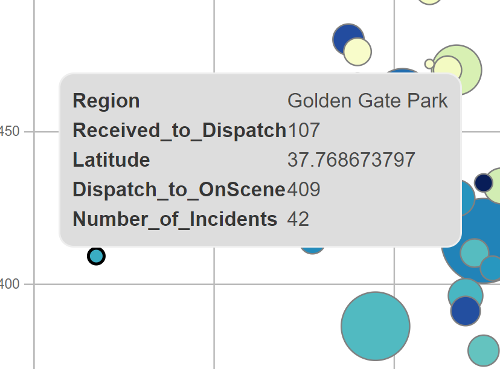
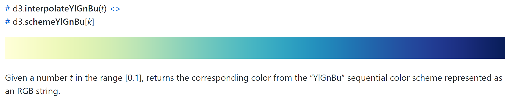

This D3 version bubble chart was built based on its prototype. Same as before, it represents how fast San Francisco Fire Department responses. The efficieny is measured by two different time ranges in x, y axis correspondly, which are 1) time difference between Dispatch time and Received time, 2) time difference between Dispatch time and On Scene time. Each bubble represents a different region in San Francisco, with 41 regions in total. The color of the bubble chart represents the location measured by the continuous variable, Latitude, from South to North. At the same time, each bubble in the chart indicates the count of incidents in each region.
Here are several improvements/changes that are added on this D3 version bubble chart based on the bubble chart prototype: 1) Interactive functionalities are updated. - The highlight will be shown when the user mouse over a single bubble. - Details of a sungle bubble are shown in a text box when the user hover over the bubble. - When you mouse over a big bubble under a small bubble, after you mouse out the big bubble, the small bubble on it will not be covered by the big bubble. For example, if the user mouse over the most left bubble on the chart above, the detail information such as its x,y axis values and the latitude of Golden Gate Park are shown like below. It's easier to read the data accurately.  2) You may find bubbles' color looks slightly different from prototype. - Since there's no exactly the same color of prototype that I can find (source link) , I used the closest color of this D3 version. 
I built this D3 version bubble chart with the support of these informative websites below. 1) Bubble chart - https://observablehq.com/@sjengle/interactivity 2) Interactivity - https://blockbuilder.org/sjengle/0f3caca5c7329733cb8ed912d84807ed 3) Color legend - https://github.com/d3/d3-scale-chromatic